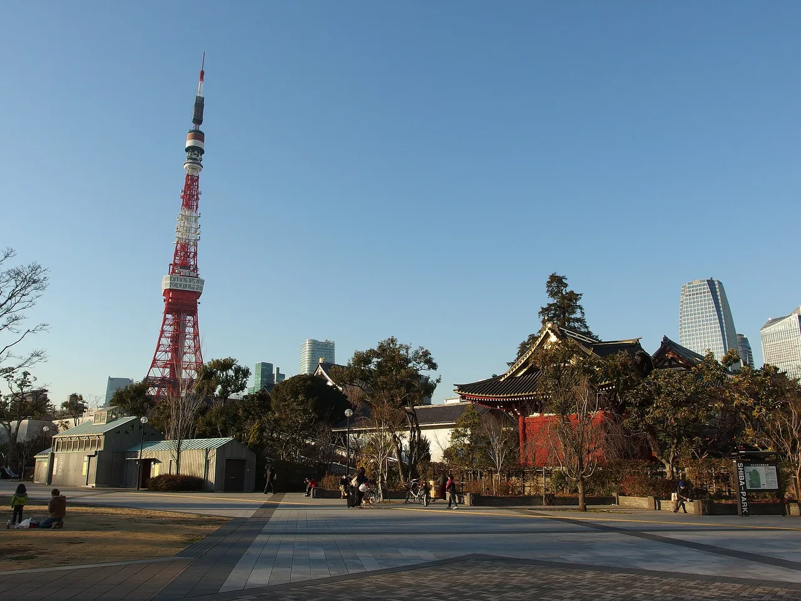

Sailor Moon manhole covers in Tokyo: where they all are
Sailor Moon has always been a Tokyo story — Usagi Tsukino lives in Azabu-Jūban, a real neighbourhood in Minato ward. In March 2024 the ward made the connection official by setting five Sailor Moon manhole covers into its streets at spots tied to the series, and it has kept adding covers since (a sixth and seventh arrived in 2026). Unlike most character manholes, which need a trip to a far-flung hometown, these sit in central Tokyo — you can collect the whole set in one afternoon on foot. This guide covers exactly where they are, why each spot was chosen, and the Japanese you'll use along the way.

Why Sailor Moon manholes exist — and why in Minato
Pretty Guardian Sailor Moon (美少女戦士セーラームーン) by Naoko Takeuchi is set with unusual precision in a real place: Usagi's home neighbourhood is Azabu-Jūban, and landmarks of Minato ward — Tokyo Tower most of all — appear throughout the manga and anime. Minato ward leaned into that connection and installed five Sailor Moon manhole covers in March 2024, each placed at a location that means something in the story, from the Azabu-Jūban shopping street to the school said to have inspired Sailor Mars' academy.
The covers follow the same playbook as Japan's other character manholes — official, licensed, cast into real working drain lids on public streets, free to see and photograph. And the set is still growing: a sixth cover was added in March 2026 and a seventh in May 2026, so treat the ward's official information (and the tourist information desks nearby) as the source of truth for the current count and exact spots.
All cover locations
The five original covers, with why each spot was chosen. Exact positions can shift with roadworks, so if a cover isn't where you expect, ask locally or check Minato ward's official pages.
| # | Location | Design | Story connection |
|---|---|---|---|
| 1 | Azabu-Jūban shopping street entrance麻布十番商店街 | Sailor Moon & Tuxedo Mask | Usagi's home neighbourhood — the heart of the series' real-world setting |
| 2 | Minato City Library, by Shiba Park港区立図書館・芝公園 | The main Sailor Guardians together | Shiba Park and its surroundings appear across the series |
| 3 | Near Tōyō Eiwa Jogakuin東洋英和女学院 | The five Guardians on red — Sailor Mars' colour | The school said to have inspired T.A. Girls' Academy, where Rei (Sailor Mars) studies |
| 4 | Near Tokyo Tower (Shiba Water Station, Shibakōen)芝給水所・東京タワー | The five Guardians on green — Sailor Jupiter's colour | Tokyo Tower is the series' signature landmark |
| 5 | Keiō-Nakadōri shopping street entrance慶応仲通り商店街 | The five Guardians on yellow — Sailor Venus' colour | A second shōtengai entrance cover, rounding out the original set |
| 6 | Tokyo Midtown area, Roppongi | The ten Guardians (sakura) | Added March 2026 |
| 7 | Takanawa Gateway Station area | The ten Guardians (rainbow) | Added May 2026 — the newest cover |
Cover designs and spots are as reported at installation; the ward has been extending the set, so the official map outranks any blog — including this one — for what exists right now.
A one-afternoon walking route
This is one of the easiest character-cover hunts in Japan because the whole set sits inside one central ward:
- Start at Azabu-Jūban Station (Namboku / Oedo lines). The shopping-street cover is the natural first find, and the shōtengai itself — old shops, taiyaki, cafés — is worth the stroll Usagi would approve of.
- Walk east toward Shiba Park (about 20–25 minutes, or one stop by bus). The library cover and the Tokyo Tower cover are both in the Shiba Park area, with the tower looming over you exactly as it does in the anime.
- Add the two outliers: the Tōyō Eiwa cover is a short detour north of Azabu-Jūban toward Roppongi (do it before you head east), and the Keiō-Nakadōri cover sits south of Shiba Park toward Mita — the full five-cover loop is 2–3 relaxed hours.
- Finish under Tokyo Tower at golden hour. It's the series' icon, and the photo everyone actually wants.
- These are working drain covers on live streets. Watch for traffic and don't block the shōtengai — it's a real shopping street, not a film set.
- The school cover is near a private school. Photograph the manhole, not the school or its students, and keep a respectful distance from the gates.
- Cover count changes. Two covers were added in 2026 alone — confirm the current set before promising yourself a "complete" collection.
Other Sailor Moon spots nearby
If the covers whet your appetite, the same neighbourhood holds the series' deeper real-world roots. Rei's shrine has two real-world models: the manga places it on Sendaizaka and draws on Azabu Hikawa Shrine (麻布氷川神社), while the 90s anime's imagery is based on Akasaka Hikawa Shrine (赤坂氷川神社) — a lovely, quiet Edo-period shrine. Both are a short walk or subway hop from Azabu-Jūban. If you're collecting goshuin, it's a natural stop. The broader hobby of visiting a series' real places has a name — seichi junrei, anime pilgrimage — and this walk is one of the gentlest introductions to it.
Some links above are affiliate links. We may earn a commission at no extra cost to you. We only list services we'd use ourselves. As an Amazon Associate, NihongoHub earns from qualifying purchases.
The Japanese you'll actually use
Asking a shopkeeper or a tourist information desk where the covers are is half the fun — the vocabulary:
| Japanese | Reading | Meaning |
|---|---|---|
| 美少女戦士セーラームーン | Bishōjo Senshi Sērā Mūn | Pretty Guardian Sailor Moon — the series' full Japanese title |
| マンホール | manhōru | manhole (cover) |
| 麻布十番 | Azabu-Jūban | the neighbourhood — Usagi's home turf |
| 商店街 | shōtengai | shopping street — two covers sit at shōtengai entrances |
| 東京タワー | Tōkyō Tawā | Tokyo Tower — the series' landmark |
| 神社 | jinja | Shintō shrine — like Rei's Hikawa Shrine |
| 聖地巡礼 | seichi junrei | "pilgrimage to sacred ground" — visiting a work's real places |
| どこですか | doko desu ka | "where is…?" — マンホールはどこですか works perfectly |
Want these to stick? The free JLPT battle quiz drills travel and culture vocabulary like this with spaced repetition.
Want the merch, not just the manhole?
Sailor Moon goods — from official jewellery collabs to Japan-only stationery — often never leave the country. If you're collecting from overseas, a proxy-buying service ships them worldwide.
See our honest comparison: how to buy from Japan with Buyee vs ZenMarket →
Or go straight to ZenMarket (proxy buying, ships worldwide) →
The manhole walk goes straight through the Azabu-Jūban streets where Usagi's story is set. The Eternal Edition is the current definitive English release — oversized pages, restored colour art.
The "Check price" link is an affiliate link (Amazon). We may earn a small commission at no extra cost to you, and it never changes what we recommend.
The Sailor Moon walk chains naturally with Japan's other location-based hunts: character manholes by series →, Gundam manholes →, Pokéfuta →, free manhole cards →, and anime pilgrimage →.
Common questions
Q. Where are the Sailor Moon manhole covers in Tokyo?
A. In Minato ward, at spots tied to the series: the Azabu-Jūban shopping street entrance, near the Minato City Library by Shiba Park, near Tōyō Eiwa Jogakuin school, in Shiba Park near Tokyo Tower, and at the Keiō-Nakadōri shopping street entrance. Additional covers were added in 2026 — check Minato ward's official information for the newest spots.
Q. How many Sailor Moon manholes are there?
A. Five covers were installed in March 2024, a sixth in March 2026 and a seventh in May 2026. The set has grown twice already, so confirm the current count officially before you plan a "complete" hunt.
Q. Why are they in Azabu-Jūban?
A. Because that's where the story lives: protagonist Usagi Tsukino's home neighbourhood is Azabu-Jūban, and Minato ward landmarks like Tokyo Tower appear throughout the manga and anime. The ward placed each cover at a spot with a series connection.
Q. Can I see them all in one day?
A. Easily. All the covers sit within one central Tokyo ward, and a relaxed walking loop from Azabu-Jūban Station to Shiba Park collects the original five in 2–3 hours.
Q. Are they free to see?
A. Yes — they're working drain covers on public streets, free to see and photograph. Mind traffic, don't block the shopping streets, and be respectful near the school location.
Q. Is the Hikawa Shrine from Sailor Moon real?
A. Two real shrines share the honour: the manga draws on Azabu Hikawa Shrine (the story's stated Sendaizaka location), while the 90s anime's look is based on Akasaka Hikawa Shrine. Both are near Azabu-Jūban, and both are working shrines, so normal shrine etiquette applies.